Política de Privacidad
Última actualización: 26 de enero de 2026
1. Información al Usuario
AKRA Tech Studio, en adelante RESPONSABLE, es el Responsable del tratamiento de los datos personales del Usuario y le informa que estos datos serán tratados de conformidad con lo dispuesto en el Reglamento (UE) 2016/679 de 27 de abril (GDPR) y la Ley Orgánica 3/2018 de 5 de diciembre (LOPDGDD).
2. Identidad del Responsable
Denominación social: AKRA Tech Studio
Email de contacto: hola@akratechstudio.es
Sitio web: www.akratechstudio.es
3. Principios aplicables al tratamiento de datos personales
El tratamiento de los datos personales del Usuario se someterá a los siguientes principios recogidos en el artículo 5 del GDPR:
- Licitud, lealtad y transparencia: Se requerirá en todo momento el consentimiento del Usuario previa información completamente transparente de los fines para los cuales se recogen los datos personales.
- Limitación de la finalidad: Los datos personales serán recogidos con fines determinados, explícitos y legítimos.
- Minimización de datos: Los datos personales recogidos serán únicamente los estrictamente necesarios en relación con los fines para los que son tratados.
- Exactitud: Los datos personales deben ser exactos y estar siempre actualizados.
- Limitación del plazo de conservación: Los datos personales solo serán mantenidos de forma que se permita la identificación del Usuario durante el tiempo necesario para los fines de su tratamiento.
- Integridad y confidencialidad: Los datos personales serán tratados de manera que se garantice su seguridad y confidencialidad.
4. ¿Con qué finalidad tratamos sus datos personales?
En AKRA Tech Studio tratamos la información que nos facilitan las personas interesadas con el fin de:
- Gestionar las consultas realizadas a través del formulario de contacto del sitio web.
- Enviar comunicaciones comerciales sobre nuestros servicios, siempre que haya otorgado su consentimiento.
- Gestionar la relación comercial y contractual con nuestros clientes.
- Cumplir con las obligaciones legales que nos resulten de aplicación.
5. ¿Por cuánto tiempo conservaremos sus datos?
Los datos personales proporcionados se conservarán:
- Mientras se mantenga la relación comercial o durante los años necesarios para cumplir con las obligaciones legales.
- Los datos de formularios de contacto se conservarán durante 2 años desde el último contacto.
- Los datos comerciales se conservarán mientras no se solicite su supresión por el interesado.
6. Legitimación
La base legal para el tratamiento de sus datos es:
- El consentimiento del Usuario al rellenar cualquier formulario web y aceptar las condiciones de la presente política.
- La ejecución de un contrato o relación comercial.
- El cumplimiento de obligaciones legales.
- El interés legítimo del Responsable.
7. ¿A qué destinatarios se comunicarán sus datos?
Sus datos no serán compartidos con terceros, salvo obligación legal. No se realizan transferencias internacionales de datos.
8. Derechos del Usuario
El Usuario tiene derecho a:
- Derecho de acceso: conocer qué datos personales tenemos sobre usted.
- Derecho de rectificación: modificar los datos que sean inexactos.
- Derecho de supresión: solicitar la eliminación de sus datos.
- Derecho de oposición: oponerse al tratamiento de sus datos.
- Derecho a la limitación del tratamiento: solicitar que se limite el tratamiento.
- Derecho a la portabilidad: recibir sus datos en formato estructurado.
- Derecho a no ser objeto de decisiones individualizadas automatizadas.
Para ejercer estos derechos, puede contactarnos en: hola@akratechstudio.es
También tiene derecho a presentar una reclamación ante la Agencia Española de Protección de Datos (www.aepd.es).
9. Medidas de seguridad
AKRA Tech Studio tratará los datos del Usuario en todo momento de forma absolutamente confidencial y guardando el preceptivo deber de secreto respecto de los mismos, de conformidad con lo previsto en la normativa de aplicación, adoptando las medidas técnicas y organizativas necesarias para garantizar la seguridad de sus datos.
10. Enlaces a sitios web de terceros
Este sitio web puede contener enlaces a sitios web de terceros. AKRA Tech Studio no se hace responsable del contenido ni de las políticas de privacidad de dichos sitios web.
11. Actualización de la Política de Privacidad
AKRA Tech Studio se reserva el derecho a modificar la presente política para adaptarla a novedades legislativas o jurisprudenciales. En dichos supuestos, anunciará los cambios con antelación suficiente a su puesta en práctica.
← Volver al inicio